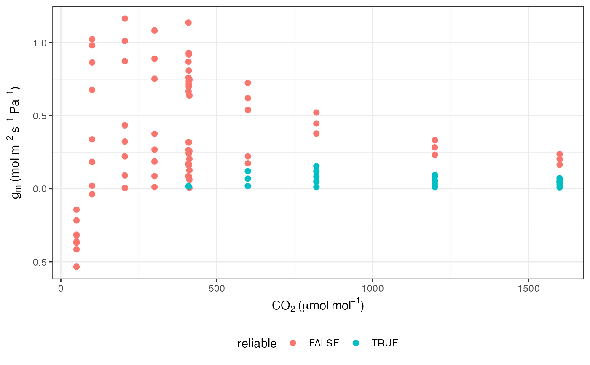
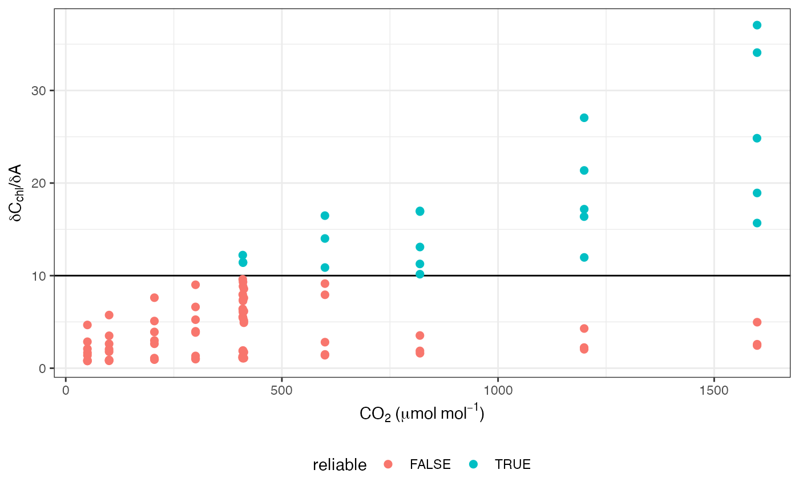

R/fit_g_mc_variableJ.R
fit_g_mc_variableJ.RdFitting mesophyll conductance with the variable J method
fit_g_mc_variableJ(
data,
varnames = list(A_net = "A_net", J_etr = "J_etr", C_i = "C_i", PPFD = "PPFD", phi_PSII
= "phi_PSII"),
usealpha_Q = FALSE,
alpha_Q = 0.84,
beta_Q = 0.5,
gamma_star,
R_d,
P = 100
)Dataframe
Variable names to fit g_mc. varnames = list(A_net = "A_net", J_etr = "J_etr", C_i = "C_i", PPFD = "PPFD", phi_PSII = "phi_PSII"), where A_net is net CO2 assimilation in umol m-2 s-1, J_etr is linear electron transport flux in umol m-2 s-1, C_i is intercellular CO2 concentration in umol mol-1, PPFD is incident irradiance in umol m-2 s-1, phi_PSII is the operating efficiency of photosystem II.
Recalculate electron transport with new absorbance value?
Absorbance of photosynthetically active radiation
Partitioning of absorbed light energy between PSI and PSII
Photorespiratory CO2 compensation point in umol mol-1
Respiration rate in umol m-2 s-1
Atmospheric pressure in kPa
fit_g_mc_variableJ fits mesophyll conductance according to Harley et al. 1992. It also tests the reliability of the calculation and calculates a mean with only reliable values. Note that the output is in units of umol m-2 s-1 Pa-1.
Harley PC, Loreto F, Di Marco G, Sharkey TD. 1992. Theoretical considerations when estimating mesophyll conductance to CO2 flux by analysis of the response of photosynthesis to CO2. Plant Physiol 98:1429 - 1436.
# \donttest{
# Read in your data
# Note that this data is coming from data supplied by the package
# hence the complicated argument in read.csv()
# This dataset is a CO2 by light response curve for a single sunflower
data <- read.csv(system.file("extdata", "A_Ci_Q_data_1.csv",
package = "photosynthesis"
))
# Note: there will be issues here if the alpha value used
# for calculating ETR is off, if gamma_star is incorrect,
# if R_d is incorrect.
data <- fit_g_mc_variableJ(data,
varnames = list(
A_net = "A",
J_etr = "ETR",
C_i = "Ci",
PPFD = "Qin",
phi_PSII = "PhiPS2"
),
gamma_star = 46,
R_d = 0.153,
usealpha_Q = TRUE,
alpha_Q = 0.84,
beta_Q = 0.5,
P = 84
)
# Note that many g_mc values from this method can be unreliable
ggplot(data, aes(x = CO2_s, y = g_mc, colour = reliable)) +
labs(
x = expression(CO[2] ~ "(" * mu * mol ~ mol^
{
-1
} * ")"),
y = expression(g[m] ~ "(mol" ~ m^{
-2
} ~ s^{
-1
} ~ Pa^
{
-1
} * ")")
) +
geom_point(size = 2) +
theme_bw() +
theme(legend.position = "bottom")

# Plot QAQC graph according to Harley et al. 1992
ggplot(data, aes(x = CO2_s, y = dCcdA, colour = reliable)) +
labs(
x = expression(CO[2] ~ "(" * mu * mol ~ mol^
{
-1
} * ")"),
y = expression(delta * C[chl] * "/" * delta * A)
) +
geom_hline(yintercept = 10) +
geom_point(size = 2) +
theme_bw() +
theme(legend.position = "bottom")

# }